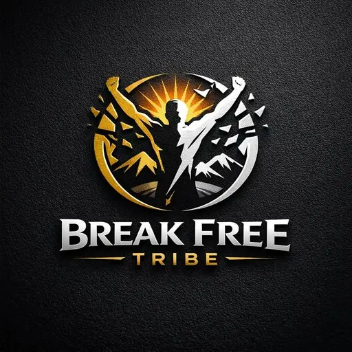

TABERNACLE OF SOLACE CHURCH
Where Brokenness Meets Divine Solace.
A place of restoration, spiritual growth, and comfort in God's presence. Whether you are seeking God, rebuilding your faith, or looking for a church family, you are welcome here.
Welcome to TSC
A tabernacle is a dwelling place, and solace is comfort. Tabernacle of Solace Church exists to be a place where God dwells among His people, and where the hurting, the tired and the searching find comfort, healing and a way forward.
We are committed to helping people grow in faith, understand God's Word, and find spiritual encouragement.
Our vision
To be a tabernacle of solace for the nations: a place where the broken find comfort, the bound find freedom, and the weary find rest.
Our mission
To restore broken souls and renew faith in Jesus Christ through the clear preaching of the Word, prophetic ministry, deliverance, and loving discipleship.
The Lord hath sent me to bind up the brokenhearted, to proclaim liberty to the captives.
Isaiah 61:1 (KJV)Upcoming programmes
Confirmed gatherings, with their dates, times and venues.
Loading programmes…
Today's devotional
Loading…
Today's Bible reading
Loading…
Apostle Oluwaseun Israel
Apostle Oluwaseun Israel is a prophetic minister, author and teacher with 17 years in ministry. He is the founder of the Break Free Tribe platform, where he has published 10 books and created 25 courses to help people grow in faith and live free.
His message is practical and rooted in Scripture. He leads Tabernacle of Solace Church with a heart for people who are weary, wounded or waiting on God.
- Prophetic ministry
- Deliverance
- Discipleship
- Financial wisdom
- Apostolic authority
New Believers' Centre
Growing in faith is a journey. Explore twelve foundational lessons to understand God's Word, develop your prayer life, and build a strong foundation in Christ.
Connect with TSC
Take the next step. We would love to walk with you.

Explore Break Free Tribe
Break Free Tribe is a separate digital resource platform founded by Apostle Oluwaseun Israel. Discover a growing collection of books, teachings, courses, daily devotionals, and Bible study resources created to support spiritual growth and lifelong learning.
Explore Break Free Tribe Learn more
Break Free Tribe is a resource platform. It is not the church membership portal.